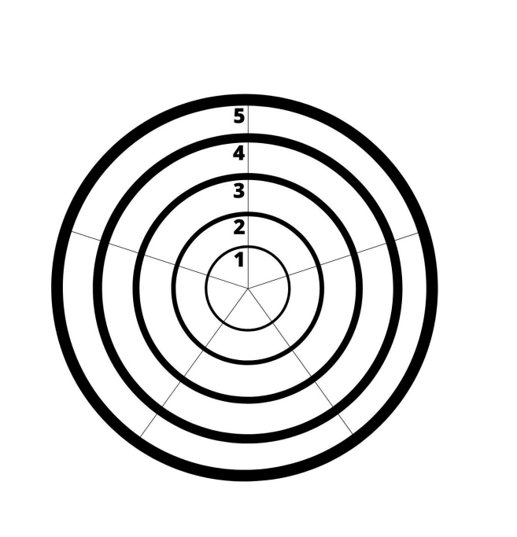

Estrategia de Evaluación y Lista de Cotejo
La presente estrategia de evaluación ha sido diseñada para el proyecto de Geografía e Historia sobre las civilizaciones de Mesopotamia y Egipto. El objetivo es superar la evaluación tradicional sumativa para avanzar hacia una cultura de la evaluación formativa y procesual.
Se aplicará una triangulación de datos (docente, alumnado y pares) y se utilizarán herramientas digitales para automatizar la recogida y el análisis de la información, permitiendo una toma de decisiones basada en evidencias.
Lista de Cotejo
Se evalúa el proceso de búsqueda y curación de contenidos en el muro de Padlet y se llevará a cabo en las sesiones 2 y 3. Se busca verificar si el alumnado distingue fuentes fiables y organiza la información de forma lógica.
| Indicadores de Logro | SÍ | NO | Observaciones |
|
Identifica los límites geográficos de las civilizaciones. |
|||
| Selecciona imágenes de alta calidad y fuentes fiables. | |||
| Clasifica la información en las columnas correspondientes. |
Como herramienta digital se empleará una hoja de cálculo de Google (Sheets) sincronizada en dispositivo móvil. Si detecto un alto porcentaje de "NO" en la selección de fuentes, la variable identificada es una carencia en competencia informacional. En este caso, intervendré inmediatamente con un micro-taller de curación de contenidos, ajustando la programación en tiempo real para reforzar este aspecto antes de avanzar a la creación.
Diana de Evaluación
Se evalúa la percepción del alumnado sobre su propio aprendizaje y el funcionamiento del grupo. Se llevará a cabo tras terminar el diseño de Genially, en la sesión 6. Permite evaluar el clima de trabajo y el compromiso individual dentro de los equipos cooperativos.
Ejes de la Diana:
1. Compromiso: Participación activa en las tareas del grupo.
2. Competencia Digital: Manejo de la interactividad y herramientas de Genially.
3. Rigor Histórico: Precisión y relevancia de los datos incluidos.
4. Gestión del tiempo: Cumplimiento de los plazos y organización interna.
5. Creatividad: Originalidad en el diseño visual y la presentación del Atlas.
Ejemplo de una Diana de Evaluación

Esta herramienta permite visualizar de forma inmediata las áreas de mejora mediante la forma geométrica resultante. Al ser una evaluación realizada también por los pares, los datos permiten detectar conflictos internos. Si un equipo presenta puntuaciones bajas en "Compromiso", la variable es un problema de convivencia o motivación. Esto permite realizar una entrevista dirigida para reajustar los roles antes de la fase de exposición, garantizando que todos alcancen los objetivos de aprendizaje.
Rúbrica Combinada
Se evalúa el Atlas Digital terminado y la capacidad de comunicación oral del alumnado. Tendrá lugar en las sesiones 7 y 8.Integra la evaluación de la competencia digital y la lingüística.
| CRITERIO | EXCELENTE (4) | SATISFACTORIO (3) | EN PROCESO (2) | INSUFICIENTE (1) |
| Interactividad | Navegación fluida y uso experto de capas. | Interactividad correcta y funcional. | Pocos elementos o fallos técnicos. | Estático, sin interactividad. |
| Contenido | Datos precisos, completos y bien estructurados. | Información correcta pero poco profunda. | Faltan datos clave de la civilización. | Errores históricos graves. |
| Exposición | Discurso claro, seguro y vocabulario técnico. | Se explica bien aunque lee sus apuntes. | Dificultad para expresarse o sin rigor. | No se entiende o no participa. |
| Uso de PDI | Maneja la pizarra digital con total fluidez. | Usa la PDI con algunas dudas técnicas. | Apenas interactúa con la pantalla. | No sabe usar la tecnología. |
Se utilizará el complemento CoRubric vinculado a Google Sheets. La herramienta permite automatizar la integración de datos procedentes de distintas fuentes. Si los informes muestran una nota alta en contenido pero baja en "Uso de PDI", la variable es una falta de destreza técnica con el hardware. Estos datos me sirven para validar y mejorar mi práctica, planificando talleres específicos de uso de la pizarra digital en el próximo proyecto.